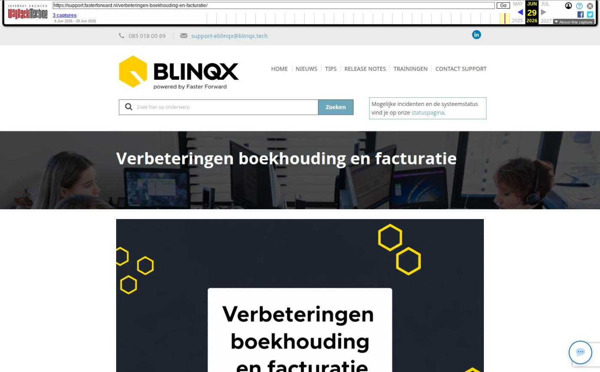

Verbeteringen boekhouding en facturatie

Tekstinhoud
Op maandag 16 maart zijn Elements en eBlinqx weer verbeterd en uitgebreid met nieuwe features. Deze release bevat verbeteringen boekhouding en facturatie.
Verbeteringen boekhouding en facturatie
Administratie koppelen aan dossiers en producten
Factureren vanuit de kaart
Verbeteringen IBAN en mandaat
IBAN en mandaat opvoeren
Mandaat automatisch aangemaakt
IBAN selecteren in product
IBAN selecteren in factuur
Wijzigingen factuur
Gevolgen ADN verwerking
Aanpassingen TP incasso
Verbeteringen boekhouding en facturatie
Administratie koppelen aan dossiers en producten
Het is nu mogelijk om een administratie te koppelen aan een dossier of een product. Op deze manier kan je een afwijkende administratie instellen en is het mogelijk om voor een bepaald dossier of product in een afwijkende administratie te boeken. Deze flexibiliteit maakt het mogelijk om per product afwijkende administraties te gebruiken, bijvoorbeeld wanneer specifieke producten zoals abonnementen niet in de administratie van de centrale organisatie maar in een andere zoals de eigen kantoor administratie moeten worden verwerkt.
De inrichting en rechten bepalen tot welke administraties je toegang hebt, welke administraties je kunt selecteren in een dossier en product en welke financiele gegevens je kunt inzien.
Factureren vanuit de kaart
Doordat je nu een administratie kunt koppelen aan het product is het mogelijk om als deelnemer gebruik te maken vanuit factureren vanuit de kaart. Voorheen was dit alleen mogelijk vanuit de administratie van de centrale organisatie.
Wil je van deze nieuwe functionaliteit ((afwijkende) administratie koppelen aan dossier/product) gebruik maken stuur dan een e-mail naar support-eblinqx@blinqx.tech zodat we deze inrichting met jou kunnen doorlopen.
Verbeteringen IBAN en mandaat
Er zijn diverse verbeteringen doorgevoerd voor het opvoeren en het werken met de IBAN en mandaat.
IBAN en mandaat opvoeren
Het volstaat nu om de IBAN en mandaat op te voeren onder de persoon/organisatie. Het is niet meer nodig om deze ook nog op te voeren onder het financiele relatieblok (klantdossier – Partijen & objecten – betreffende partij – tabblad Financieel). Je kunt onder de persoon meerdere IBAN opvoeren, waarbij je één IBAN aanmerkt als standaard IBAN. De mandaat is gekoppeld aan een rekeningnummer en administratie.
Mandaat automatisch aangemaakt
Wanneer je een factuur boekt en er is voor dat rekeningnummer en/of administratie nog geen mandaat dan wordt er automatisch een mandaat aangemaakt. Dit als de factuur een betaaltermijn van 0 dagen heeft en het een positief bedrag betreft.
IBAN selecteren in product
Het is nu mogelijk om een IBAN te koppelen aan een product (schade, leven, contract en dienst). Nadat je een aanvrager hebt geselecteerd kan je een IBAN nummer van deze aanvrager kiezen via een dropdownmenu. Als prefill wordt het standaard IBAN ingevuld. Het veld IBAN wordt alleen zichtbaar als het de betaalwijze incasso betreft. Op deze manier is het mogelijk om de facturen van producten van verschillende rekeningnummers te incasseren.
IBAN selecteren in factuur
Ook in de factuur kan je een IBAN selecteren. De IBAN die je kunt kiezen zijn op basis van de geselecteerde debiteur. Maak je een factuur die gekoppeld is aan een product dan wordt het IBAN uit het product gebruikt. Maak je een factuur die niet is gekoppeld aan een product dan wordt de standaard IBAN van de debiteur ingevuld. Het kiezen van een IBAN is verplicht als de betaaltermijn 0 dagen is.
Wijzigingen factuur
Bovengenoemde verbeteringen zijn van invloed voor het aanmaken, bewerken en boeken van een factuur. Zo is het niet meer mogelijk om buiten het dossier een factuur aan te maken. Wanneer een factuur is aangemaakt kan je het dossier, het product en de administratie niet meer wijzigen.
De mogelijkheden binnen de factuur hangen af van de rechten en de toegang tot administraties die je hebt. Dit bepaalt bijvoorbeeld of je op het boekstuk kunt klikken en of je stappen kunt nemen in de workflow. Ook kan het zijn dat je bepaalde acties in de factuur niet kan uitvoeren, bijvoorbeeld opslaan of verwijderen. De factuur is dan alleen read-only.
Het is niet mogelijk om facturen uit meerdere administraties te salderen met elkaar. Ook kan je alleen facturen uit dezelfde administratie opnemen in het betalingsoverzicht.
Gevolgen ADN verwerking
De posten in de ADN batch worden altijd geboekt in de administratie waarop de batch is binnengekomen. Staat er in het product een afwijkende administratie ingesteld dan die van de batch dan wordt bij het verwerken van de batch de administratie van het betreffende product aangepast naar de administratie waarin de batch is binnengekomen. Dit als de financiële verwerking aan staat en de polis niet valt binnen een lopende rekening-courant regeling. Je wordt hierop geattendeerd door middel van een melding.
Wanneer de polis binnen een rekening-courant regeling valt dan wordt de afwijkende administratie in het product niet aangepast. De financiele verwerking zal plaatsvinden in de administratie waarin de batch is binnengekomen en zal daarom niet worden opgenomen in de regeling. Je wordt hierop geattendeerd door middel van een oranje melding.
Door middel van filters in de batch kan je filteren op de posten waarbij het product gekoppeld is aan en aan een andere administratie dan die van de batch en het product gekoppeld is aan een RC regeling welke in een andere administratie als de batch staat.
Aanpassingen TP incasso
In de TP incassoboekingen kan je nu ook aangeven om van welke rekening deze geïncasseerd kan worden. Deze wordt overgenomen in de factuur die hoort bij de TP incassoboeking. De TP incassoboekingen worden aangemaakt onder een product. Staat in dit product een afwijkende administratie ingesteld dan zal de boeking in deze administratie aangemaakt worden.
Bij TP incassoproducten (incassowijze staat op Tussenpersoon) en de betaalwijze staat op incasso dan is het mogelijk om per verzekeringsdeel een afwijkende incassorekening te selecteren. Standaard komt in het verzekeringsdeel het rekeningnummer te staan wat links in de productkaart staat. Let op: minimaal moet één productdeel moet op de standaard manier gefactureerd worden. Dit houdt in dat er een leningdeel moet zijn waarbij afwijkende premiebetaler en afwijkend rekeningnummer niet staat aangevinkt.
Geplaatst op 13 maart 2026
Laatste 5 releasenotes
Verbeteringen performance »
Voorbereidingen op HDN 26 en verbeteringen PortefeuilleSignalen »
Nog meer data en documenten vergelijken »
Gemakkelijk data en documenten vergelijken »
Verbeteringen boekhouding en facturatie »